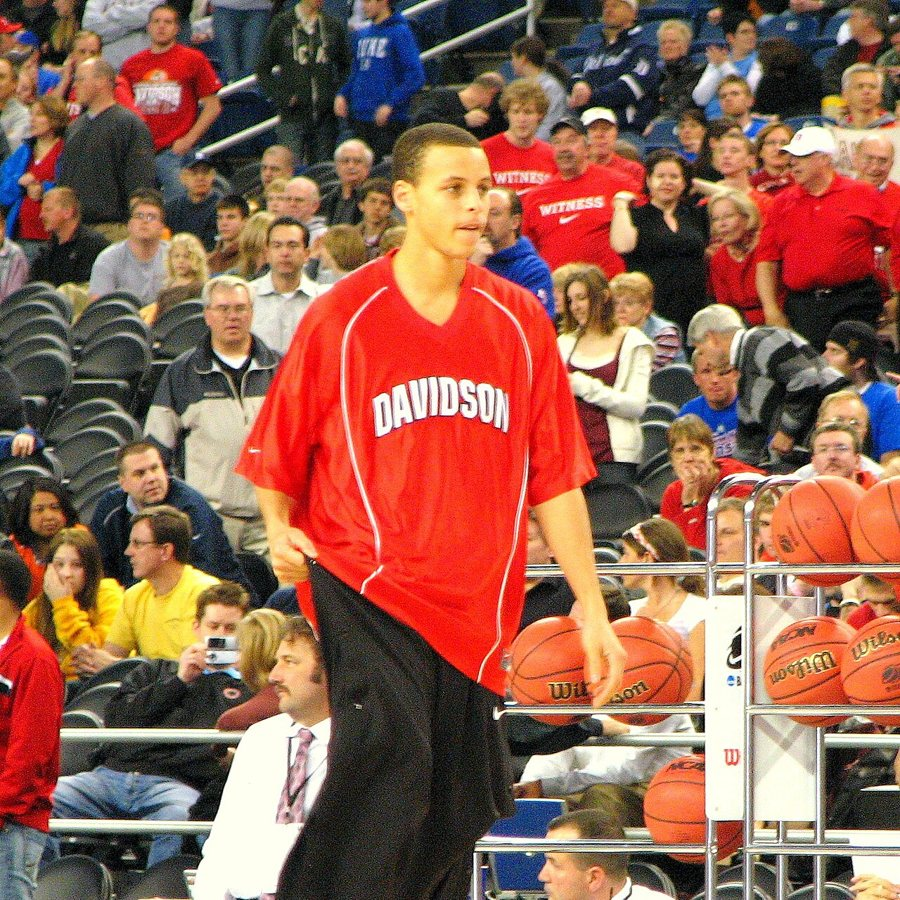
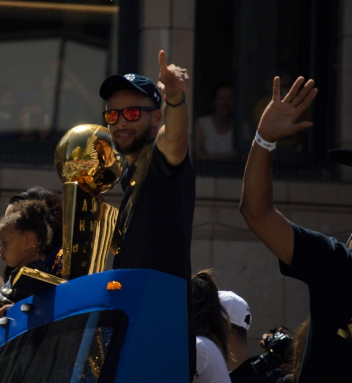
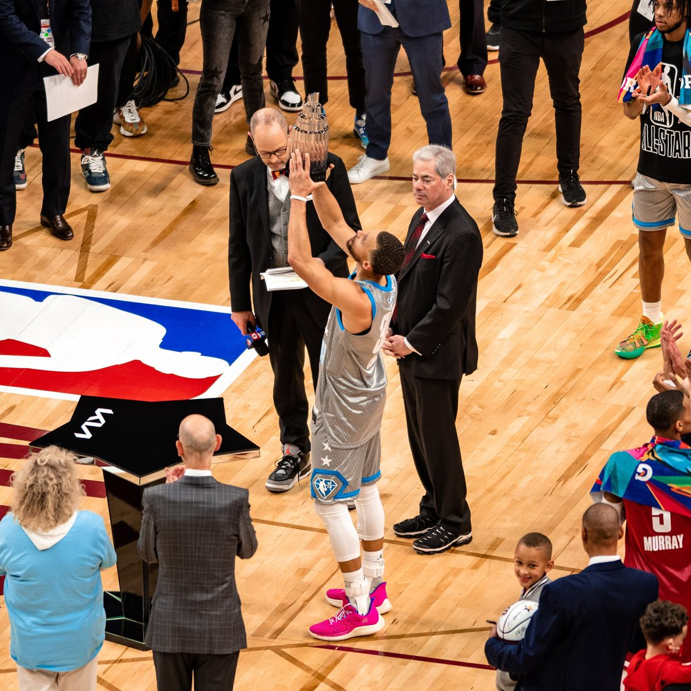
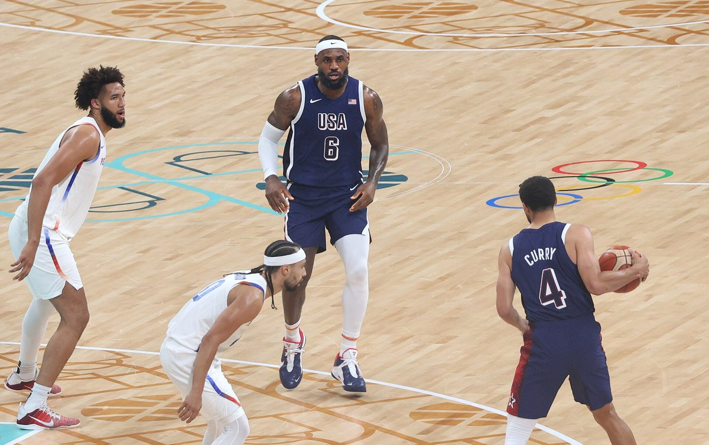

Steph Says This Is Probably His Last Contract, and I'm Not Ready for That
Nobody's retiring today. But the man just said the word out loud, and now I can't stop doing the math.

I was halfway through a bowl of cereal when I read it, and I set the spoon down so carefully you'd have thought it was made of glass.
Steph Curry, talking about the two year, $116 million extension he signed in September, said this:
"I assumed that it would probably be one of, if not the last, contract I signed. I'm not afraid to say it. But maybe I'll surprise myself and want to keep going."
Stephen Curry, this weekI read the first part about six times. Then I made myself read the last sentence about six more, because I'm a Warriors fan and we've earned the right to hold on to the hopeful part. He didn't retire. He didn't announce anything. He's 38, he's on a deal that runs through 2028-29 with a player option on the last year, and he's sitting in San Francisco right now rehabbing a torn oblique and itching to get back on the floor.
But he said it. Out loud. And once Steph says something out loud, you can't really unhear it.
The knee is the part that got me
The oblique is the injury on the report. It's the knee that's the real story.
The cartilage in his right knee is wearing down. That's what last season was. He missed 27 games in a row, more than two months, with what got called runner's knee, and it was bad enough that the fans voted him an All-Star starter in February and he couldn't even play in the game. This year he's been playing about 28 minutes a night and sitting out the second game of back to backs, and I'd been telling myself that was just smart load management for an old guy. It is. It's also a team protecting a knee that doesn't grow new cartilage.
He talked about it in a way I've never heard from him before. "It sucks because it's a part of your mortality," he said. "Basketball mortality."
Basketball mortality. I had to go stand on my back porch for a minute after that one.
And the cruel part? He isn't slowing down. In his first ten games this season he was averaging 27.8 points and shooting 45.7 percent from three. He dropped 44 in Minnesota. He dropped 41 on Orlando. He'd missed one free throw all year. The jumper's fine. The jumper might be better than ever. It's everything underneath it that's on a clock now.
So let me do the thing we never do around here
We don't stop and look at the whole thing very often. We're too busy refreshing injury updates and yelling about the bench. So I'm going to walk through it, the whole ride, the way I'd tell it to somebody who somehow missed it.
The skinny kid from Davidson
Before anybody out here knew his name
Look at that picture. That's the guy every big school passed on. He looked like a ball boy, and he took a tiny school from North Carolina to the Elite Eight in 2008 and had the whole country staying up to watch a sophomore nobody had recruited. The Warriors took him seventh in 2009. I remember people around here being lukewarm about it. Too small. Bad ankles. Nice shooter, sure.
Nice shooter. We were all so wrong it's almost funny now.
He broke the sport
Two MVPs, a title, and 73 winsThe first ring came in 2015, and so did his first MVP. That alone would've made him a Warriors legend. Then 2015-16 happened and I still don't fully believe it. He made 402 threes in one season. The old record was his own, 286. He shot 50, 40 and 90. We went 73 and 9. He won the MVP again and it was unanimous, every single vote, which had never happened before in the history of the league.
And there was that night in Oklahoma City, in February, when he pulled up from about 38 feet in overtime to win it, and Mike Breen just yelled "BANG! BANG!" like he'd lost his mind. I was in a sports bar on Clement Street and a guy I'd never met hugged me. I let him.
Back to back
Rings two and three, and a city that got used to parades
People love to put an asterisk on these two because of who else was on the roster. I don't care. I was on Broadway in Oakland for that parade and the confetti was still in my car in August. Steph was the reason the whole thing worked. Every team that ever guarded us had to start the plan with him, and everybody else got open because of it.
Passing Wilt, and the scoring title nobody saw coming
Age 33, on a roster with no business winning anythingKlay was hurt. The team wasn't any good. And Steph went out and won the scoring title anyway, his second, at 33 years old, averaging 32 a night. Somewhere in there he passed Wilt Chamberlain to become the leading scorer in Warriors history. Wilt! In the same uniform! I think that season gets forgotten and it shouldn't, because it was pure stubbornness, and it's when I stopped worrying about him getting old.
The record
Madison Square Garden, three number 2,974He passed Ray Allen for the most threes ever, at the Garden, with Ray sitting right there. The whole building stood up. That was supposed to be the finish line. Instead he kept going, became the first player to ever make 4,000 threes, and walked into this season with 4,248. The guys chasing him are still trying to get to three thousand. He isn't ahead of the field. He's in a different sport.
The one that was all his
Fourth ring, first Finals MVP, in Boston
This is the one I'll tell my grandkids about. Everybody said the window was shut. We'd been the worst team in the West two years earlier. And then in the Finals, down two games to one, in Boston, with the crowd chanting at him, he put up 43 and 10 and dragged us back into the series by the collar. We won it in six, on their floor. He finally got the Finals MVP, the one award everybody kept saying he was missing, and he sat on the floor and cried into the ball.
I cried too. I'm not embarrassed. My wife's got video.
Paris
Olympic gold, finally, and he took it personally
The one thing missing was Olympic gold, so he went and got it. Thirty six against Serbia in the semifinal when it looked like we might actually lose. Then in the gold medal game against France, in their building, he hit four threes in the last few minutes, and the last one was so ridiculous that he did the night night thing with his hands before it even came down. Eight threes and 24 points in the final. I was up at some ugly hour of the morning yelling at a TV in my living room and my neighbor texted me to shut up. Worth it.
The trophy case, all in one place
And this season he passed Dominique Wilkins on the all time scoring list, on the same night he left Luka on the floor in front of 18,000 people. He's still adding to it. That's what gets me.
What I'd actually miss
It isn't the numbers. You can look up the numbers.
It's the shimmy. It's him turning around to run back on defense before the ball's even through the net. It's the mouthpiece hanging out, and the little dance after a heat check, and Riley on the podium, and the way the whole arena gets up off its seat when he crosses half court with the ball, because everybody in there knows he can let it go from anywhere and nobody wants to be sitting down when he does. Opposing fans do it too. They come to their own building in his jersey.
He changed how kids play. Every playground in the Bay has some ten year old pulling up from the parking lot. He changed how the league plays, and every coach in the world builds a defense around a problem he invented. And he did every bit of it here, in one jersey, for one team, for the people who stood in line at Oracle when we were bad and pay way too much at Chase now that we're spoiled. If he plays out this deal it'll be his 20th season in Golden State blue and gold. That almost never happens anymore.
There's never been anybody like him. I don't think there will be again. I know every fan says that about their guy, and I'm a homer, and I'm saying it anyway, because this time it's true.
So go watch him
The oblique has him out for what looks like close to a month, and he's already said the thing that matters to him is being healthy for the end of the season. "If we want to be any semblance of a threat come the end of the year, I need to be available," he said. That's him. Still thinking about winning. Still talking about a threat.
So here's my only ask. When he comes back, go. Buy the bad seats. Take your kid, take your dad, take the coworker who says he's overrated. Stay home on a Tuesday and watch a nothing game against Utah all the way through, because every one of those nights is on a countdown now, and someday you're going to want to say you didn't waste them.
He said maybe he'll surprise himself. I'm holding him to that.
Until then, the details: the deal itself is in our column on the extension, the full record book is on Stephen Curry by the numbers, the oblique and the game by game calendar are in the torn oblique column, and every banner he helped hang is in Warriors championship history. When he's cleared, you'll see it first on the Warriors injury report.
More coverage: Warriors · NBA · Bay Area Sports Blog home